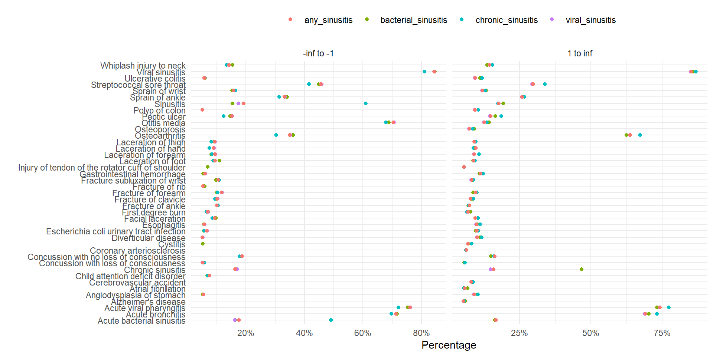

library(duckdb)
library(CDMConnector)
library(PatientProfiles)
library(dplyr)
library(ggplot2)
con <- dbConnect(duckdb(), eunomia_dir())
cdm <- cdmFromCon(con = con, cdmSchema = "main", writeSchema = "main")
cdm <- generateConceptCohortSet(
cdm = cdm,
name = "sinusitis",
conceptSet = list(
"bacterial_sinusitis" = 4294548,
"viral_sinusitis" = 40481087,
"chronic_sinusitis" = 257012,
"any_sinusitis" = c(4294548, 40481087, 257012)
),
limit = "all",
end = 0
)
cdm$new_sinusitis <- cdm$sinusitis |>
addSex() |>
filter(sex == "Female") |>
select(-"sex") |>
compute(name = "new_sinusitis", temporary = F) |>
recordCohortAttrition("Restrict to Females") |>
addAge() |>
filter(age < 18) |>
select(-"age") |>
compute(name = "new_sinusitis", temporary = F) |>
recordCohortAttrition("Restrict to under 18")
cdm <- generateConceptCohortSet(
cdm = cdm,
conceptSet = list(
"myocardial_infarction" = c(4329847),
"fracture" = c(4048695, 4142905, 4278672, 4237458, 4230399, 40480160, 4066995, 4059173, 4134304),
"allergy" = c(4084167, 40486433, 4280726, 4048171),
"infection" = c(4116491, 433125, 4056621, 40481087, 4112343),
"pneumonia" = c(255848),
"asthma" = c(4051466, 317009)
),
limit = "all",
end = 0,
name = "conditions"
)
cdm <- generateConceptCohortSet(
cdm = cdm,
conceptSet = list(
"antineoplastic_and_immunomodulating_agents" = c(1118088, 1118084, 40224132, 19010482, 40224805, 19007333, 1500211, 1305058, 1503184, 19134077, 1549786),
"musculoskeletal_system" = c(1118088, 1557272, 40162359, 1124300, 1115008, 40173590, 1118084, 42707627, 19019273, 19019979, 19078461, 19003953, 1112807, 1115171, 1177480),
"antiinfectives_for_systemic_use" = c(19129655, 1728416, 920293, 19074841, 920300, 920334, 19074843, 19075001, 19073183, 19073188, 1713671, 1729720, 19006318, 1778162, 46275444, 1717327, 1738521, 1741122, 1759842, 1713332, 1746114, 1768849, 46233710, 19133873, 46233988, 19133905),
"nervous_system" = c(708298, 701322, 723013, 1129625, 1110410, 753626, 1124957, 1102527, 1125315, 782043, 791967, 1119510, 19078219, 757627, 40220386, 740275, 40223774, 1154029, 1127078, 1127433, 40222846, 19057271, 40223768, 45892894, 705944, 715997, 19078924, 19076374, 19077572, 40229134, 19059056, 19016749, 40236446, 19074679, 742185, 40231925, 1112807, 35605858, 40162522, 782047, 19039298, 19059528, 836654, 836659, 19115351, 19023398, 19002770, 19123231, 19133768, 40165015),
"dermatologicals" = c(1129625, 1149380, 1124300, 836654, 1595799, 975125, 19008572),
"respiratory_system" = c(1129625, 1149196, 1149380, 1150770, 1150836, 1153428, 1107830, 1110410, 738818, 1124957, 40169216, 1125443, 1119510, 1137529, 1154615, 1154343, 40223821, 19019979, 19112599, 40223834, 43012036, 40229134, 19029476, 19078461, 40232448, 1177480, 1192710, 1343916, 1150771, 1150837, 1107882, 975125, 1174888, 40169281, 40228214, 40228230, 19125062)
),
limit = "all",
end = "event_end_date",
name = "medications"
)CohortCharacteristics
summariseCharacteristics and summariseLargeScaleCharacteristics
CohortCharacteristics
Let’s get started
Workflow
We have three types of functions:
summarise: these functions produce an standardised output to summarise a cohort. This standard output is called
summarised_result.plot: these functions produce plots (currently, only ggplot, but working to implement plotly) from a
summarised_resultobject.table: these functions produce tables (gt and flextable) from a
summarised_resultobject.
Contents
Each function has an associated
tableandplotfunction
Website
Cohort characteristics is on cran:
install.packages("CohortCharacteristics")You can also install the development version from our github repo:
remotes::install_github("darwin-eu-dev/CohortCharacteristics")The documentation and vignettes of the packages can be found in our page: https://darwin-eu-dev.github.io/CohortCharacteristics/
summariseCharacteristics
library(CohortCharacteristics)
cdm$new_sinusitis |>
addAge(ageGroup = list(c(0, 4), c(5, 9), c(10, 14), c(15, 18))) |>
summariseCharacteristics(
strata = list("age_group"),
demographics = TRUE,
ageGroup = list(c(0, 4), c(5, 9), c(10, 14), c(15, 18)),
tableIntersectCount = list(
"Number of visits prior year" = list(
tableName = "visit_occurrence", window = c(-365, 0)
)
),
cohortIntersectFlag = list(
"Conditions any time prior" = list(
targetCohortTable = "conditions", window = c(-Inf, 0)
),
"Medications prior year" = list(
targetCohortTable = "medications", window = c(-365, 0)
)
)
)summariseCharacteristics
Rows: 1,384
Columns: 13
$ result_id <int> 1, 1, 1, 1, 1, 1, 1, 1, 1, 1, 1, 1, 1, 1, 1, 1, 1, 1, 1, 1, 1, 1, 1, 1, 1, 1, 1, 1, 1, 1, 1, 1, 1, 1, 1…
$ cdm_name <chr> "Synthea synthetic health database", "Synthea synthetic health database", "Synthea synthetic health dat…
$ group_name <chr> "cohort_name", "cohort_name", "cohort_name", "cohort_name", "cohort_name", "cohort_name", "cohort_name"…
$ group_level <chr> "viral_sinusitis", "any_sinusitis", "chronic_sinusitis", "bacterial_sinusitis", "viral_sinusitis", "any…
$ strata_name <chr> "overall", "overall", "overall", "overall", "overall", "overall", "overall", "overall", "overall", "ove…
$ strata_level <chr> "overall", "overall", "overall", "overall", "overall", "overall", "overall", "overall", "overall", "ove…
$ variable_name <chr> "Number records", "Number records", "Number records", "Number records", "Number subjects", "Number subj…
$ variable_level <chr> NA, NA, NA, NA, NA, NA, NA, NA, NA, NA, NA, NA, NA, NA, NA, NA, NA, NA, NA, NA, NA, NA, NA, NA, NA, NA,…
$ estimate_name <chr> "count", "count", "count", "count", "count", "count", "count", "count", "min", "min", "min", "min", "q2…
$ estimate_type <chr> "integer", "integer", "integer", "integer", "integer", "integer", "integer", "integer", "date", "date",…
$ estimate_value <chr> "2623", "2931", "154", "154", "1182", "1221", "154", "147", "1908-10-30", "1908-10-30", "1913-02-09", "…
$ additional_name <chr> "overall", "overall", "overall", "overall", "overall", "overall", "overall", "overall", "overall", "ove…
$ additional_level <chr> "overall", "overall", "overall", "overall", "overall", "overall", "overall", "overall", "overall", "ove…tableCharacteristics
result |>
tableCharacteristics(header = "strata", groupColumn = "cohort_name")| CDM name | Variable name | Variable level | Estimate name | Age group | ||||
|---|---|---|---|---|---|---|---|---|
| Overall | 0 to 4 | 10 to 14 | 15 to 18 | 5 to 9 | ||||
| Any sinusitis | ||||||||
| Synthea synthetic health database | Number records | - | N | 2,931 | 797 | 783 | 501 | 850 |
| Number subjects | - | N | 1,221 | 606 | 599 | 416 | 624 | |
| Cohort start date | - | Median [Q25 - Q75] | 1969-12-12 [1958-01-09 - 1980-08-10] | 1963-09-23 [1953-07-02 - 1973-06-22] | 1974-01-31 [1962-01-07 - 1984-02-15] | 1978-04-06 [1966-11-01 - 1987-04-21] | 1968-05-23 [1956-12-20 - 1978-02-02] | |
| Range | 1908-10-30 to 2002-08-24 | 1908-10-30 to 1989-11-10 | 1919-09-27 to 1999-02-21 | 1924-05-03 to 2002-08-24 | 1914-01-20 to 1993-10-13 | |||
| Cohort end date | - | Median [Q25 - Q75] | 1969-12-12 [1958-01-09 - 1980-08-10] | 1963-09-23 [1953-07-02 - 1973-06-22] | 1974-01-31 [1962-01-07 - 1984-02-15] | 1978-04-06 [1966-11-01 - 1987-04-21] | 1968-05-23 [1956-12-20 - 1978-02-02] | |
| Range | 1908-10-30 to 2002-08-24 | 1908-10-30 to 1989-11-10 | 1919-09-27 to 1999-02-21 | 1924-05-03 to 2002-08-24 | 1914-01-20 to 1993-10-13 | |||
| Sex | Female | N (%) | 2,931 (100.0%) | 797 (100.0%) | 783 (100.0%) | 501 (100.0%) | 850 (100.0%) | |
| Age | - | Median [Q25 - Q75] | 8 [4 - 13] | 2 [1 - 3] | 12 [11 - 13] | 16 [15 - 17] | 7 [6 - 8] | |
| Mean (SD) | 8.52 (5.13) | 2.11 (1.42) | 11.98 (1.40) | 15.99 (0.81) | 6.94 (1.37) | |||
| Range | 0 to 17 | 0 to 4 | 10 to 14 | 15 to 17 | 5 to 9 | |||
| Age group | 0 to 4 | N (%) | 797 (27.2%) | 797 (100.0%) | - | - | - | |
| 10 to 14 | N (%) | 783 (26.7%) | - | 783 (100.0%) | - | - | ||
| 15 to 18 | N (%) | 501 (17.1%) | - | - | 501 (100.0%) | - | ||
| 5 to 9 | N (%) | 850 (29.0%) | - | - | - | 850 (100.0%) | ||
| Prior observation | - | Median [Q25 - Q75] | 3,198 [1,696 - 4,925] | 965 [488 - 1,419] | 4,535 [4,093 - 5,008] | 6,036 [5,760 - 6,278] | 2,706 [2,276 - 3,134] | |
| Mean (SD) | 3,295.40 (1,880.12) | 952.25 (531.42) | 4,558.14 (521.33) | 6,029.00 (313.09) | 2,718.04 (508.25) | |||
| Range | 35 to 6,573 | 35 to 1,825 | 3,654 to 5,473 | 5,480 to 6,573 | 1,829 to 3,652 | |||
| Future observation | - | Median [Q25 - Q75] | 17,653 [13,832 - 21,878] | 20,052 [16,464 - 23,417] | 16,074 [12,566 - 20,354] | 14,718 [11,295 - 18,535] | 18,354 [14,748 - 22,234] | |
| Mean (SD) | 18,297.26 (5,940.87) | 20,590.41 (5,575.98) | 16,848.50 (5,610.33) | 15,569.09 (5,773.78) | 19,089.68 (5,668.79) | |||
| Range | 5,660 to 40,093 | 10,310 to 40,093 | 7,347 to 36,328 | 5,660 to 33,998 | 8,713 to 38,185 | |||
| Number of visits prior year | - | Median [Q25 - Q75] | 0.00 [0.00 - 0.00] | 0.00 [0.00 - 0.00] | 0.00 [0.00 - 0.00] | 0.00 [0.00 - 0.00] | 0.00 [0.00 - 0.00] | |
| Mean (SD) | 0.00 (0.10) | 0.01 (0.12) | 0.00 (0.07) | 0.00 (0.00) | 0.01 (0.12) | |||
| Range | 0.00 to 2.00 | 0.00 to 2.00 | 0.00 to 2.00 | 0.00 to 0.00 | 0.00 to 2.00 | |||
| Conditions any time prior | Allergy | N (%) | 197 (6.7%) | 27 (3.4%) | 56 (7.2%) | 39 (7.8%) | 75 (8.8%) | |
| Asthma | N (%) | 95 (3.2%) | 17 (2.1%) | 26 (3.3%) | 20 (4.0%) | 32 (3.8%) | ||
| Fracture | N (%) | 619 (21.1%) | 44 (5.5%) | 240 (30.7%) | 191 (38.1%) | 144 (16.9%) | ||
| Infection | N (%) | 2,846 (97.1%) | 743 (93.2%) | 774 (98.9%) | 496 (99.0%) | 833 (98.0%) | ||
| Myocardial infarction | N (%) | 0 (0.0%) | 0 (0.0%) | 0 (0.0%) | 0 (0.0%) | 0 (0.0%) | ||
| Pneumonia | N (%) | 0 (0.0%) | 0 (0.0%) | 0 (0.0%) | 0 (0.0%) | 0 (0.0%) | ||
| Medications prior year | Antiinfectives for systemic use | N (%) | 817 (27.9%) | 247 (31.0%) | 192 (24.5%) | 126 (25.1%) | 252 (29.6%) | |
| Antineoplastic and immunomodulating agents | N (%) | 3 (0.1%) | 0 (0.0%) | 0 (0.0%) | 3 (0.6%) | 0 (0.0%) | ||
| Dermatologicals | N (%) | 4 (0.1%) | 1 (0.1%) | 1 (0.1%) | 1 (0.2%) | 1 (0.1%) | ||
| Musculoskeletal system | N (%) | 42 (1.4%) | 12 (1.5%) | 10 (1.3%) | 12 (2.4%) | 8 (0.9%) | ||
| Nervous system | N (%) | 562 (19.2%) | 199 (25.0%) | 135 (17.2%) | 81 (16.2%) | 147 (17.3%) | ||
| Respiratory system | N (%) | 103 (3.5%) | 36 (4.5%) | 20 (2.6%) | 21 (4.2%) | 26 (3.1%) | ||
| Bacterial sinusitis | ||||||||
| Synthea synthetic health database | Number records | - | N | 154 | 48 | 34 | 31 | 41 |
| Number subjects | - | N | 147 | 48 | 33 | 30 | 41 | |
| Cohort start date | - | Median [Q25 - Q75] | 1971-05-29 [1959-04-02 - 1982-05-23] | 1965-06-16 [1960-08-03 - 1976-05-25] | 1979-10-17 [1969-03-30 - 1985-04-16] | 1982-09-22 [1956-09-19 - 1990-12-10] | 1967-01-23 [1955-11-02 - 1979-12-13] | |
| Range | 1912-05-27 to 1998-12-05 | 1912-05-27 to 1985-06-24 | 1947-10-02 to 1995-08-19 | 1928-12-03 to 1998-12-05 | 1914-11-10 to 1990-07-30 | |||
| Cohort end date | - | Median [Q25 - Q75] | 1971-05-29 [1959-04-02 - 1982-05-23] | 1965-06-16 [1960-08-03 - 1976-05-25] | 1979-10-17 [1969-03-30 - 1985-04-16] | 1982-09-22 [1956-09-19 - 1990-12-10] | 1967-01-23 [1955-11-02 - 1979-12-13] | |
| Range | 1912-05-27 to 1998-12-05 | 1912-05-27 to 1985-06-24 | 1947-10-02 to 1995-08-19 | 1928-12-03 to 1998-12-05 | 1914-11-10 to 1990-07-30 | |||
| Sex | Female | N (%) | 154 (100.0%) | 48 (100.0%) | 34 (100.0%) | 31 (100.0%) | 41 (100.0%) | |
| Age | - | Median [Q25 - Q75] | 8 [4 - 14] | 2 [1 - 4] | 12 [11 - 13] | 16 [15 - 17] | 7 [5 - 8] | |
| Mean (SD) | 8.45 (5.41) | 2.31 (1.40) | 12.26 (1.31) | 16.06 (0.81) | 6.71 (1.44) | |||
| Range | 0 to 17 | 0 to 4 | 10 to 14 | 15 to 17 | 5 to 9 | |||
| Age group | 0 to 4 | N (%) | 48 (31.2%) | 48 (100.0%) | - | - | - | |
| 10 to 14 | N (%) | 34 (22.1%) | - | 34 (100.0%) | - | - | ||
| 15 to 18 | N (%) | 31 (20.1%) | - | - | 31 (100.0%) | - | ||
| 5 to 9 | N (%) | 41 (26.6%) | - | - | - | 41 (100.0%) | ||
| Prior observation | - | Median [Q25 - Q75] | 3,074 [1,560 - 5,134] | 1,084 [572 - 1,471] | 4,583 [4,390 - 5,056] | 6,004 [5,807 - 6,376] | 2,585 [2,163 - 3,095] | |
| Mean (SD) | 3,262.81 (1,981.36) | 1,011.21 (532.03) | 4,640.09 (469.62) | 6,062.26 (296.00) | 2,640.05 (518.35) | |||
| Range | 64 to 6,567 | 64 to 1,776 | 3,729 to 5,465 | 5,548 to 6,567 | 1,868 to 3,638 | |||
| Future observation | - | Median [Q25 - Q75] | 17,198 [13,309 - 21,557] | 19,604 [15,285 - 21,504] | 14,367 [12,056 - 17,833] | 12,824 [10,068 - 22,167] | 19,056 [14,183 - 23,241] | |
| Mean (SD) | 18,100.36 (6,556.41) | 20,092.54 (6,140.59) | 15,218.47 (3,990.19) | 15,770.94 (7,470.00) | 19,919.20 (6,761.19) | |||
| Range | 7,069 to 39,104 | 12,124 to 39,104 | 8,616 to 24,096 | 7,069 to 32,731 | 10,149 to 37,834 | |||
| Number of visits prior year | - | Median [Q25 - Q75] | 0.00 [0.00 - 0.00] | 0.00 [0.00 - 0.00] | 0.00 [0.00 - 0.00] | 0.00 [0.00 - 0.00] | 0.00 [0.00 - 0.00] | |
| Mean (SD) | 0.00 (0.00) | 0.00 (0.00) | 0.00 (0.00) | 0.00 (0.00) | 0.00 (0.00) | |||
| Range | 0.00 to 0.00 | 0.00 to 0.00 | 0.00 to 0.00 | 0.00 to 0.00 | 0.00 to 0.00 | |||
| Conditions any time prior | Allergy | N (%) | 7 (4.5%) | 1 (2.1%) | 2 (5.9%) | 2 (6.5%) | 2 (4.9%) | |
| Asthma | N (%) | 3 (1.9%) | 1 (2.1%) | 0 (0.0%) | 1 (3.2%) | 1 (2.4%) | ||
| Fracture | N (%) | 27 (17.5%) | 0 (0.0%) | 12 (35.3%) | 11 (35.5%) | 4 (9.8%) | ||
| Infection | N (%) | 112 (72.7%) | 22 (45.8%) | 30 (88.2%) | 30 (96.8%) | 30 (73.2%) | ||
| Myocardial infarction | N (%) | 0 (0.0%) | 0 (0.0%) | 0 (0.0%) | 0 (0.0%) | 0 (0.0%) | ||
| Pneumonia | N (%) | 0 (0.0%) | 0 (0.0%) | 0 (0.0%) | 0 (0.0%) | 0 (0.0%) | ||
| Medications prior year | Antiinfectives for systemic use | N (%) | 42 (27.3%) | 15 (31.2%) | 9 (26.5%) | 6 (19.4%) | 12 (29.3%) | |
| Antineoplastic and immunomodulating agents | N (%) | 1 (0.6%) | 0 (0.0%) | 0 (0.0%) | 1 (3.2%) | 0 (0.0%) | ||
| Dermatologicals | N (%) | 0 (0.0%) | 0 (0.0%) | 0 (0.0%) | 0 (0.0%) | 0 (0.0%) | ||
| Musculoskeletal system | N (%) | 1 (0.6%) | 0 (0.0%) | 0 (0.0%) | 1 (3.2%) | 0 (0.0%) | ||
| Nervous system | N (%) | 30 (19.5%) | 13 (27.1%) | 5 (14.7%) | 4 (12.9%) | 8 (19.5%) | ||
| Respiratory system | N (%) | 3 (1.9%) | 1 (2.1%) | 1 (2.9%) | 1 (3.2%) | 0 (0.0%) | ||
| Chronic sinusitis | ||||||||
| Synthea synthetic health database | Number records | - | N | 154 | 46 | 41 | 29 | 38 |
| Number subjects | - | N | 154 | 46 | 41 | 29 | 38 | |
| Cohort start date | - | Median [Q25 - Q75] | 1972-05-19 [1959-03-02 - 1981-11-11] | 1965-06-06 [1957-11-16 - 1975-12-01] | 1980-02-02 [1963-10-02 - 1982-12-20] | 1987-10-05 [1977-12-06 - 1991-02-07] | 1965-04-08 [1956-05-23 - 1974-12-22] | |
| Range | 1913-02-09 to 1998-09-29 | 1913-02-09 to 1985-07-22 | 1925-01-25 to 1997-08-21 | 1929-04-11 to 1998-09-29 | 1915-01-12 to 1986-11-01 | |||
| Cohort end date | - | Median [Q25 - Q75] | 1972-05-19 [1959-03-02 - 1981-11-11] | 1965-06-06 [1957-11-16 - 1975-12-01] | 1980-02-02 [1963-10-02 - 1982-12-20] | 1987-10-05 [1977-12-06 - 1991-02-07] | 1965-04-08 [1956-05-23 - 1974-12-22] | |
| Range | 1913-02-09 to 1998-09-29 | 1913-02-09 to 1985-07-22 | 1925-01-25 to 1997-08-21 | 1929-04-11 to 1998-09-29 | 1915-01-12 to 1986-11-01 | |||
| Sex | Female | N (%) | 154 (100.0%) | 46 (100.0%) | 41 (100.0%) | 29 (100.0%) | 38 (100.0%) | |
| Age | - | Median [Q25 - Q75] | 8 [4 - 14] | 2 [1 - 4] | 12 [11 - 13] | 16 [15 - 17] | 6 [5 - 7] | |
| Mean (SD) | 8.49 (5.43) | 2.15 (1.49) | 12.20 (1.47) | 16.10 (0.82) | 6.37 (1.17) | |||
| Range | 0 to 17 | 0 to 4 | 10 to 14 | 15 to 17 | 5 to 9 | |||
| Age group | 0 to 4 | N (%) | 46 (29.9%) | 46 (100.0%) | - | - | - | |
| 10 to 14 | N (%) | 41 (26.6%) | - | 41 (100.0%) | - | - | ||
| 15 to 18 | N (%) | 29 (18.8%) | - | - | 29 (100.0%) | - | ||
| 5 to 9 | N (%) | 38 (24.7%) | - | - | - | 38 (100.0%) | ||
| Prior observation | - | Median [Q25 - Q75] | 2,928 [1,648 - 5,136] | 1,019 [573 - 1,461] | 4,695 [4,105 - 5,096] | 5,992 [5,832 - 6,340] | 2,448 [2,138 - 2,792] | |
| Mean (SD) | 3,275.45 (1,978.91) | 979.74 (543.42) | 4,623.41 (534.88) | 6,053.17 (321.08) | 2,480.24 (429.52) | |||
| Range | 96 to 6,565 | 96 to 1,796 | 3,731 to 5,331 | 5,521 to 6,565 | 1,831 to 3,461 | |||
| Future observation | - | Median [Q25 - Q75] | 17,064 [13,549 - 21,200] | 19,457 [15,574 - 22,268] | 14,217 [12,931 - 19,196] | 11,321 [9,942 - 15,060] | 19,194 [16,142 - 22,591] | |
| Mean (SD) | 17,783.61 (6,261.00) | 20,157.39 (6,132.23) | 16,213.46 (5,318.39) | 13,478.86 (6,043.65) | 19,889.39 (5,415.47) | |||
| Range | 6,986 to 38,753 | 12,096 to 38,753 | 7,537 to 30,372 | 6,986 to 32,871 | 10,991 to 31,900 | |||
| Number of visits prior year | - | Median [Q25 - Q75] | 0.00 [0.00 - 0.00] | 0.00 [0.00 - 0.00] | 0.00 [0.00 - 0.00] | 0.00 [0.00 - 0.00] | 0.00 [0.00 - 0.00] | |
| Mean (SD) | 0.01 (0.16) | 0.04 (0.29) | 0.00 (0.00) | 0.00 (0.00) | 0.00 (0.00) | |||
| Range | 0.00 to 2.00 | 0.00 to 2.00 | 0.00 to 0.00 | 0.00 to 0.00 | 0.00 to 0.00 | |||
| Conditions any time prior | Allergy | N (%) | 6 (3.9%) | 0 (0.0%) | 2 (4.9%) | 3 (10.3%) | 1 (2.6%) | |
| Asthma | N (%) | 3 (1.9%) | 0 (0.0%) | 0 (0.0%) | 2 (6.9%) | 1 (2.6%) | ||
| Fracture | N (%) | 29 (18.8%) | 4 (8.7%) | 11 (26.8%) | 9 (31.0%) | 5 (13.2%) | ||
| Infection | N (%) | 111 (72.1%) | 18 (39.1%) | 36 (87.8%) | 25 (86.2%) | 32 (84.2%) | ||
| Myocardial infarction | N (%) | 0 (0.0%) | 0 (0.0%) | 0 (0.0%) | 0 (0.0%) | 0 (0.0%) | ||
| Pneumonia | N (%) | 0 (0.0%) | 0 (0.0%) | 0 (0.0%) | 0 (0.0%) | 0 (0.0%) | ||
| Medications prior year | Antiinfectives for systemic use | N (%) | 34 (22.1%) | 13 (28.3%) | 8 (19.5%) | 7 (24.1%) | 6 (15.8%) | |
| Antineoplastic and immunomodulating agents | N (%) | 0 (0.0%) | 0 (0.0%) | 0 (0.0%) | 0 (0.0%) | 0 (0.0%) | ||
| Dermatologicals | N (%) | 0 (0.0%) | 0 (0.0%) | 0 (0.0%) | 0 (0.0%) | 0 (0.0%) | ||
| Musculoskeletal system | N (%) | 5 (3.2%) | 1 (2.2%) | 1 (2.4%) | 3 (10.3%) | 0 (0.0%) | ||
| Nervous system | N (%) | 25 (16.2%) | 14 (30.4%) | 4 (9.8%) | 3 (10.3%) | 4 (10.5%) | ||
| Respiratory system | N (%) | 6 (3.9%) | 1 (2.2%) | 1 (2.4%) | 3 (10.3%) | 1 (2.6%) | ||
| Viral sinusitis | ||||||||
| Synthea synthetic health database | Number records | - | N | 2,623 | 703 | 708 | 441 | 771 |
| Number subjects | - | N | 1,182 | 565 | 566 | 380 | 588 | |
| Cohort start date | - | Median [Q25 - Q75] | 1969-09-24 [1957-10-29 - 1980-04-08] | 1963-03-05 [1952-12-31 - 1973-05-19] | 1973-08-09 [1961-07-17 - 1984-02-15] | 1977-09-15 [1966-07-12 - 1986-06-25] | 1968-08-02 [1957-01-27 - 1978-01-29] | |
| Range | 1908-10-30 to 2002-08-24 | 1908-10-30 to 1989-11-10 | 1919-09-27 to 1999-02-21 | 1924-05-03 to 2002-08-24 | 1914-01-20 to 1993-10-13 | |||
| Cohort end date | - | Median [Q25 - Q75] | 1969-09-24 [1957-10-29 - 1980-04-08] | 1963-03-05 [1952-12-31 - 1973-05-19] | 1973-08-09 [1961-07-17 - 1984-02-15] | 1977-09-15 [1966-07-12 - 1986-06-25] | 1968-08-02 [1957-01-27 - 1978-01-29] | |
| Range | 1908-10-30 to 2002-08-24 | 1908-10-30 to 1989-11-10 | 1919-09-27 to 1999-02-21 | 1924-05-03 to 2002-08-24 | 1914-01-20 to 1993-10-13 | |||
| Sex | Female | N (%) | 2,623 (100.0%) | 703 (100.0%) | 708 (100.0%) | 441 (100.0%) | 771 (100.0%) | |
| Age | - | Median [Q25 - Q75] | 8 [4 - 13] | 2 [1 - 3] | 12 [11 - 13] | 16 [15 - 17] | 7 [6 - 8] | |
| Mean (SD) | 8.53 (5.10) | 2.10 (1.42) | 11.95 (1.40) | 15.98 (0.81) | 6.98 (1.37) | |||
| Range | 0 to 17 | 0 to 4 | 10 to 14 | 15 to 17 | 5 to 9 | |||
| Age group | 0 to 4 | N (%) | 703 (26.8%) | 703 (100.0%) | - | - | - | |
| 10 to 14 | N (%) | 708 (27.0%) | - | 708 (100.0%) | - | - | ||
| 15 to 18 | N (%) | 441 (16.8%) | - | - | 441 (100.0%) | - | ||
| 5 to 9 | N (%) | 771 (29.4%) | - | - | - | 771 (100.0%) | ||
| Prior observation | - | Median [Q25 - Q75] | 3,218 [1,717 - 4,899] | 938 [487 - 1,416] | 4,524 [4,083 - 4,993] | 6,039 [5,751 - 6,275] | 2,720 [2,296 - 3,158] | |
| Mean (SD) | 3,298.49 (1,868.79) | 946.42 (531.06) | 4,550.43 (522.97) | 6,025.07 (314.21) | 2,733.91 (508.56) | |||
| Range | 35 to 6,573 | 35 to 1,825 | 3,654 to 5,473 | 5,480 to 6,573 | 1,829 to 3,652 | |||
| Future observation | - | Median [Q25 - Q75] | 17,749 [13,924 - 21,928] | 20,092 [16,468 - 23,636] | 16,272 [12,554 - 20,470] | 14,854 [11,645 - 18,612] | 18,307 [14,751 - 22,126] | |
| Mean (SD) | 18,338.98 (5,884.26) | 20,652.73 (5,503.33) | 16,963.55 (5,683.92) | 15,692.36 (5,607.79) | 19,006.15 (5,618.99) | |||
| Range | 5,660 to 40,093 | 10,310 to 40,093 | 7,347 to 36,328 | 5,660 to 33,998 | 8,713 to 38,185 | |||
| Number of visits prior year | - | Median [Q25 - Q75] | 0.00 [0.00 - 0.00] | 0.00 [0.00 - 0.00] | 0.00 [0.00 - 0.00] | 0.00 [0.00 - 0.00] | 0.00 [0.00 - 0.00] | |
| Mean (SD) | 0.00 (0.10) | 0.01 (0.11) | 0.00 (0.08) | 0.00 (0.00) | 0.01 (0.12) | |||
| Range | 0.00 to 2.00 | 0.00 to 2.00 | 0.00 to 2.00 | 0.00 to 0.00 | 0.00 to 2.00 | |||
| Conditions any time prior | Allergy | N (%) | 184 (7.0%) | 26 (3.7%) | 52 (7.3%) | 34 (7.7%) | 72 (9.3%) | |
| Asthma | N (%) | 89 (3.4%) | 16 (2.3%) | 26 (3.7%) | 17 (3.9%) | 30 (3.9%) | ||
| Fracture | N (%) | 563 (21.5%) | 40 (5.7%) | 217 (30.6%) | 171 (38.8%) | 135 (17.5%) | ||
| Infection | N (%) | 2,623 (100.0%) | 703 (100.0%) | 708 (100.0%) | 441 (100.0%) | 771 (100.0%) | ||
| Myocardial infarction | N (%) | 0 (0.0%) | 0 (0.0%) | 0 (0.0%) | 0 (0.0%) | 0 (0.0%) | ||
| Pneumonia | N (%) | 0 (0.0%) | 0 (0.0%) | 0 (0.0%) | 0 (0.0%) | 0 (0.0%) | ||
| Medications prior year | Antiinfectives for systemic use | N (%) | 741 (28.3%) | 219 (31.2%) | 175 (24.7%) | 113 (25.6%) | 234 (30.4%) | |
| Antineoplastic and immunomodulating agents | N (%) | 2 (0.1%) | 0 (0.0%) | 0 (0.0%) | 2 (0.5%) | 0 (0.0%) | ||
| Dermatologicals | N (%) | 4 (0.2%) | 1 (0.1%) | 1 (0.1%) | 1 (0.2%) | 1 (0.1%) | ||
| Musculoskeletal system | N (%) | 36 (1.4%) | 11 (1.6%) | 9 (1.3%) | 8 (1.8%) | 8 (1.0%) | ||
| Nervous system | N (%) | 507 (19.3%) | 172 (24.5%) | 126 (17.8%) | 74 (16.8%) | 135 (17.5%) | ||
| Respiratory system | N (%) | 94 (3.6%) | 34 (4.8%) | 18 (2.5%) | 17 (3.9%) | 25 (3.2%) | ||
tableCharacteristics
result |>
filter(group_level == "any_sinusitis") |>
tableCharacteristics(
header = c("strata"),
formatEstimateName = c(
"N(%)" = "<count> (<percentage>%)",
"N" = "<count>",
"median [IQR]" = "<median> [<q25> - <q75>]"
),
excludeColumns = c(
"cdm_name", "result_id", "estimate_type", "additional_name", "additional_level", "cohort_name"
),
.options = list(keepNotFormatted = FALSE)
)tableCharacteristics
| Variable name | Variable level | Estimate name | Age group | ||||
|---|---|---|---|---|---|---|---|
| Overall | 0 to 4 | 10 to 14 | 15 to 18 | 5 to 9 | |||
| Number records | - | N | 2,931 | 797 | 783 | 501 | 850 |
| Number subjects | - | N | 1,221 | 606 | 599 | 416 | 624 |
| Cohort start date | - | median [IQR] | 1969-12-12 [1958-01-09 - 1980-08-10] | 1963-09-23 [1953-07-02 - 1973-06-22] | 1974-01-31 [1962-01-07 - 1984-02-15] | 1978-04-06 [1966-11-01 - 1987-04-21] | 1968-05-23 [1956-12-20 - 1978-02-02] |
| Cohort end date | - | median [IQR] | 1969-12-12 [1958-01-09 - 1980-08-10] | 1963-09-23 [1953-07-02 - 1973-06-22] | 1974-01-31 [1962-01-07 - 1984-02-15] | 1978-04-06 [1966-11-01 - 1987-04-21] | 1968-05-23 [1956-12-20 - 1978-02-02] |
| Sex | Female | N(%) | 2,931 (100.0%) | 797 (100.0%) | 783 (100.0%) | 501 (100.0%) | 850 (100.0%) |
| Age | - | median [IQR] | 8 [4 - 13] | 2 [1 - 3] | 12 [11 - 13] | 16 [15 - 17] | 7 [6 - 8] |
| Age group | 0 to 4 | N(%) | 797 (27.2%) | 797 (100.0%) | - | - | - |
| 10 to 14 | N(%) | 783 (26.7%) | - | 783 (100.0%) | - | - | |
| 15 to 18 | N(%) | 501 (17.1%) | - | - | 501 (100.0%) | - | |
| 5 to 9 | N(%) | 850 (29.0%) | - | - | - | 850 (100.0%) | |
| Prior observation | - | median [IQR] | 3,198 [1,696 - 4,925] | 965 [488 - 1,419] | 4,535 [4,093 - 5,008] | 6,036 [5,760 - 6,278] | 2,706 [2,276 - 3,134] |
| Future observation | - | median [IQR] | 17,653 [13,832 - 21,878] | 20,052 [16,464 - 23,417] | 16,074 [12,566 - 20,354] | 14,718 [11,295 - 18,535] | 18,354 [14,748 - 22,234] |
| Number of visits prior year | - | median [IQR] | 0.00 [0.00 - 0.00] | 0.00 [0.00 - 0.00] | 0.00 [0.00 - 0.00] | 0.00 [0.00 - 0.00] | 0.00 [0.00 - 0.00] |
| Conditions any time prior | Allergy | N(%) | 197 (6.7%) | 27 (3.4%) | 56 (7.2%) | 39 (7.8%) | 75 (8.8%) |
| Asthma | N(%) | 95 (3.2%) | 17 (2.1%) | 26 (3.3%) | 20 (4.0%) | 32 (3.8%) | |
| Fracture | N(%) | 619 (21.1%) | 44 (5.5%) | 240 (30.7%) | 191 (38.1%) | 144 (16.9%) | |
| Infection | N(%) | 2,846 (97.1%) | 743 (93.2%) | 774 (98.9%) | 496 (99.0%) | 833 (98.0%) | |
| Myocardial infarction | N(%) | 0 (0.0%) | 0 (0.0%) | 0 (0.0%) | 0 (0.0%) | 0 (0.0%) | |
| Pneumonia | N(%) | 0 (0.0%) | 0 (0.0%) | 0 (0.0%) | 0 (0.0%) | 0 (0.0%) | |
| Medications prior year | Antiinfectives for systemic use | N(%) | 817 (27.9%) | 247 (31.0%) | 192 (24.5%) | 126 (25.1%) | 252 (29.6%) |
| Antineoplastic and immunomodulating agents | N(%) | 3 (0.1%) | 0 (0.0%) | 0 (0.0%) | 3 (0.6%) | 0 (0.0%) | |
| Dermatologicals | N(%) | 4 (0.1%) | 1 (0.1%) | 1 (0.1%) | 1 (0.2%) | 1 (0.1%) | |
| Musculoskeletal system | N(%) | 42 (1.4%) | 12 (1.5%) | 10 (1.3%) | 12 (2.4%) | 8 (0.9%) | |
| Nervous system | N(%) | 562 (19.2%) | 199 (25.0%) | 135 (17.2%) | 81 (16.2%) | 147 (17.3%) | |
| Respiratory system | N(%) | 103 (3.5%) | 36 (4.5%) | 20 (2.6%) | 21 (4.2%) | 26 (3.1%) | |
export gt tables
gt tables can easily be exported to word:
myTable |> gt::gtsave("table.docx")plotCharacteristics
result |>
filter(variable_name == "Age" & strata_level == "overall") |>
plotCharacteristics(plotStyle = "boxplot", colour = "group_level")plotCharacteristics
result |>
filter(
variable_name == "Conditions any time prior" &
strata_level == "overall" &
estimate_name == "percentage"
) |>
plotCharacteristics(x = "group_level", colour = "group_level", facet = "variable_level")Your turn
Can you summarise the characteristics for conditions cohort and include the % of subjects that took the medications in the medications cohort after record of the conditions? Also create a gt table?
Solution
results <- cdm$conditions |>
summariseCharacteristics(
demographics = TRUE,
cohortIntersectFlag = list("Medications anytime after" = list(
targetCohortTable = "medications", window = c(1, Inf)
)
))
print(results)# A tibble: 294 × 13
result_id cdm_name group_name group_level strata_name strata_level variable_name variable_level estimate_name estimate_type
<int> <chr> <chr> <chr> <chr> <chr> <chr> <chr> <chr> <chr>
1 1 Synthea syn… cohort_na… fracture overall overall Number recor… <NA> count integer
2 1 Synthea syn… cohort_na… allergy overall overall Number recor… <NA> count integer
3 1 Synthea syn… cohort_na… infection overall overall Number recor… <NA> count integer
4 1 Synthea syn… cohort_na… asthma overall overall Number recor… <NA> count integer
5 1 Synthea syn… cohort_na… myocardial… overall overall Number recor… <NA> count integer
6 1 Synthea syn… cohort_na… pneumonia overall overall Number recor… <NA> count integer
7 1 Synthea syn… cohort_na… fracture overall overall Number subje… <NA> count integer
8 1 Synthea syn… cohort_na… allergy overall overall Number subje… <NA> count integer
9 1 Synthea syn… cohort_na… infection overall overall Number subje… <NA> count integer
10 1 Synthea syn… cohort_na… asthma overall overall Number subje… <NA> count integer
# ℹ 284 more rows
# ℹ 3 more variables: estimate_value <chr>, additional_name <chr>, additional_level <chr>Plot solution
result |>
tableCharacteristics(header = "strata", groupColumn = "cohort_name")| CDM name | Variable name | Variable level | Estimate name | Age group | ||||
|---|---|---|---|---|---|---|---|---|
| Overall | 0 to 4 | 10 to 14 | 15 to 18 | 5 to 9 | ||||
| Any sinusitis | ||||||||
| Synthea synthetic health database | Number records | - | N | 2,931 | 797 | 783 | 501 | 850 |
| Number subjects | - | N | 1,221 | 606 | 599 | 416 | 624 | |
| Cohort start date | - | Median [Q25 - Q75] | 1969-12-12 [1958-01-09 - 1980-08-10] | 1963-09-23 [1953-07-02 - 1973-06-22] | 1974-01-31 [1962-01-07 - 1984-02-15] | 1978-04-06 [1966-11-01 - 1987-04-21] | 1968-05-23 [1956-12-20 - 1978-02-02] | |
| Range | 1908-10-30 to 2002-08-24 | 1908-10-30 to 1989-11-10 | 1919-09-27 to 1999-02-21 | 1924-05-03 to 2002-08-24 | 1914-01-20 to 1993-10-13 | |||
| Cohort end date | - | Median [Q25 - Q75] | 1969-12-12 [1958-01-09 - 1980-08-10] | 1963-09-23 [1953-07-02 - 1973-06-22] | 1974-01-31 [1962-01-07 - 1984-02-15] | 1978-04-06 [1966-11-01 - 1987-04-21] | 1968-05-23 [1956-12-20 - 1978-02-02] | |
| Range | 1908-10-30 to 2002-08-24 | 1908-10-30 to 1989-11-10 | 1919-09-27 to 1999-02-21 | 1924-05-03 to 2002-08-24 | 1914-01-20 to 1993-10-13 | |||
| Sex | Female | N (%) | 2,931 (100.0%) | 797 (100.0%) | 783 (100.0%) | 501 (100.0%) | 850 (100.0%) | |
| Age | - | Median [Q25 - Q75] | 8 [4 - 13] | 2 [1 - 3] | 12 [11 - 13] | 16 [15 - 17] | 7 [6 - 8] | |
| Mean (SD) | 8.52 (5.13) | 2.11 (1.42) | 11.98 (1.40) | 15.99 (0.81) | 6.94 (1.37) | |||
| Range | 0 to 17 | 0 to 4 | 10 to 14 | 15 to 17 | 5 to 9 | |||
| Age group | 0 to 4 | N (%) | 797 (27.2%) | 797 (100.0%) | - | - | - | |
| 10 to 14 | N (%) | 783 (26.7%) | - | 783 (100.0%) | - | - | ||
| 15 to 18 | N (%) | 501 (17.1%) | - | - | 501 (100.0%) | - | ||
| 5 to 9 | N (%) | 850 (29.0%) | - | - | - | 850 (100.0%) | ||
| Prior observation | - | Median [Q25 - Q75] | 3,198 [1,696 - 4,925] | 965 [488 - 1,419] | 4,535 [4,093 - 5,008] | 6,036 [5,760 - 6,278] | 2,706 [2,276 - 3,134] | |
| Mean (SD) | 3,295.40 (1,880.12) | 952.25 (531.42) | 4,558.14 (521.33) | 6,029.00 (313.09) | 2,718.04 (508.25) | |||
| Range | 35 to 6,573 | 35 to 1,825 | 3,654 to 5,473 | 5,480 to 6,573 | 1,829 to 3,652 | |||
| Future observation | - | Median [Q25 - Q75] | 17,653 [13,832 - 21,878] | 20,052 [16,464 - 23,417] | 16,074 [12,566 - 20,354] | 14,718 [11,295 - 18,535] | 18,354 [14,748 - 22,234] | |
| Mean (SD) | 18,297.26 (5,940.87) | 20,590.41 (5,575.98) | 16,848.50 (5,610.33) | 15,569.09 (5,773.78) | 19,089.68 (5,668.79) | |||
| Range | 5,660 to 40,093 | 10,310 to 40,093 | 7,347 to 36,328 | 5,660 to 33,998 | 8,713 to 38,185 | |||
| Number of visits prior year | - | Median [Q25 - Q75] | 0.00 [0.00 - 0.00] | 0.00 [0.00 - 0.00] | 0.00 [0.00 - 0.00] | 0.00 [0.00 - 0.00] | 0.00 [0.00 - 0.00] | |
| Mean (SD) | 0.00 (0.10) | 0.01 (0.12) | 0.00 (0.07) | 0.00 (0.00) | 0.01 (0.12) | |||
| Range | 0.00 to 2.00 | 0.00 to 2.00 | 0.00 to 2.00 | 0.00 to 0.00 | 0.00 to 2.00 | |||
| Conditions any time prior | Allergy | N (%) | 197 (6.7%) | 27 (3.4%) | 56 (7.2%) | 39 (7.8%) | 75 (8.8%) | |
| Asthma | N (%) | 95 (3.2%) | 17 (2.1%) | 26 (3.3%) | 20 (4.0%) | 32 (3.8%) | ||
| Fracture | N (%) | 619 (21.1%) | 44 (5.5%) | 240 (30.7%) | 191 (38.1%) | 144 (16.9%) | ||
| Infection | N (%) | 2,846 (97.1%) | 743 (93.2%) | 774 (98.9%) | 496 (99.0%) | 833 (98.0%) | ||
| Myocardial infarction | N (%) | 0 (0.0%) | 0 (0.0%) | 0 (0.0%) | 0 (0.0%) | 0 (0.0%) | ||
| Pneumonia | N (%) | 0 (0.0%) | 0 (0.0%) | 0 (0.0%) | 0 (0.0%) | 0 (0.0%) | ||
| Medications prior year | Antiinfectives for systemic use | N (%) | 817 (27.9%) | 247 (31.0%) | 192 (24.5%) | 126 (25.1%) | 252 (29.6%) | |
| Antineoplastic and immunomodulating agents | N (%) | 3 (0.1%) | 0 (0.0%) | 0 (0.0%) | 3 (0.6%) | 0 (0.0%) | ||
| Dermatologicals | N (%) | 4 (0.1%) | 1 (0.1%) | 1 (0.1%) | 1 (0.2%) | 1 (0.1%) | ||
| Musculoskeletal system | N (%) | 42 (1.4%) | 12 (1.5%) | 10 (1.3%) | 12 (2.4%) | 8 (0.9%) | ||
| Nervous system | N (%) | 562 (19.2%) | 199 (25.0%) | 135 (17.2%) | 81 (16.2%) | 147 (17.3%) | ||
| Respiratory system | N (%) | 103 (3.5%) | 36 (4.5%) | 20 (2.6%) | 21 (4.2%) | 26 (3.1%) | ||
| Bacterial sinusitis | ||||||||
| Synthea synthetic health database | Number records | - | N | 154 | 48 | 34 | 31 | 41 |
| Number subjects | - | N | 147 | 48 | 33 | 30 | 41 | |
| Cohort start date | - | Median [Q25 - Q75] | 1971-05-29 [1959-04-02 - 1982-05-23] | 1965-06-16 [1960-08-03 - 1976-05-25] | 1979-10-17 [1969-03-30 - 1985-04-16] | 1982-09-22 [1956-09-19 - 1990-12-10] | 1967-01-23 [1955-11-02 - 1979-12-13] | |
| Range | 1912-05-27 to 1998-12-05 | 1912-05-27 to 1985-06-24 | 1947-10-02 to 1995-08-19 | 1928-12-03 to 1998-12-05 | 1914-11-10 to 1990-07-30 | |||
| Cohort end date | - | Median [Q25 - Q75] | 1971-05-29 [1959-04-02 - 1982-05-23] | 1965-06-16 [1960-08-03 - 1976-05-25] | 1979-10-17 [1969-03-30 - 1985-04-16] | 1982-09-22 [1956-09-19 - 1990-12-10] | 1967-01-23 [1955-11-02 - 1979-12-13] | |
| Range | 1912-05-27 to 1998-12-05 | 1912-05-27 to 1985-06-24 | 1947-10-02 to 1995-08-19 | 1928-12-03 to 1998-12-05 | 1914-11-10 to 1990-07-30 | |||
| Sex | Female | N (%) | 154 (100.0%) | 48 (100.0%) | 34 (100.0%) | 31 (100.0%) | 41 (100.0%) | |
| Age | - | Median [Q25 - Q75] | 8 [4 - 14] | 2 [1 - 4] | 12 [11 - 13] | 16 [15 - 17] | 7 [5 - 8] | |
| Mean (SD) | 8.45 (5.41) | 2.31 (1.40) | 12.26 (1.31) | 16.06 (0.81) | 6.71 (1.44) | |||
| Range | 0 to 17 | 0 to 4 | 10 to 14 | 15 to 17 | 5 to 9 | |||
| Age group | 0 to 4 | N (%) | 48 (31.2%) | 48 (100.0%) | - | - | - | |
| 10 to 14 | N (%) | 34 (22.1%) | - | 34 (100.0%) | - | - | ||
| 15 to 18 | N (%) | 31 (20.1%) | - | - | 31 (100.0%) | - | ||
| 5 to 9 | N (%) | 41 (26.6%) | - | - | - | 41 (100.0%) | ||
| Prior observation | - | Median [Q25 - Q75] | 3,074 [1,560 - 5,134] | 1,084 [572 - 1,471] | 4,583 [4,390 - 5,056] | 6,004 [5,807 - 6,376] | 2,585 [2,163 - 3,095] | |
| Mean (SD) | 3,262.81 (1,981.36) | 1,011.21 (532.03) | 4,640.09 (469.62) | 6,062.26 (296.00) | 2,640.05 (518.35) | |||
| Range | 64 to 6,567 | 64 to 1,776 | 3,729 to 5,465 | 5,548 to 6,567 | 1,868 to 3,638 | |||
| Future observation | - | Median [Q25 - Q75] | 17,198 [13,309 - 21,557] | 19,604 [15,285 - 21,504] | 14,367 [12,056 - 17,833] | 12,824 [10,068 - 22,167] | 19,056 [14,183 - 23,241] | |
| Mean (SD) | 18,100.36 (6,556.41) | 20,092.54 (6,140.59) | 15,218.47 (3,990.19) | 15,770.94 (7,470.00) | 19,919.20 (6,761.19) | |||
| Range | 7,069 to 39,104 | 12,124 to 39,104 | 8,616 to 24,096 | 7,069 to 32,731 | 10,149 to 37,834 | |||
| Number of visits prior year | - | Median [Q25 - Q75] | 0.00 [0.00 - 0.00] | 0.00 [0.00 - 0.00] | 0.00 [0.00 - 0.00] | 0.00 [0.00 - 0.00] | 0.00 [0.00 - 0.00] | |
| Mean (SD) | 0.00 (0.00) | 0.00 (0.00) | 0.00 (0.00) | 0.00 (0.00) | 0.00 (0.00) | |||
| Range | 0.00 to 0.00 | 0.00 to 0.00 | 0.00 to 0.00 | 0.00 to 0.00 | 0.00 to 0.00 | |||
| Conditions any time prior | Allergy | N (%) | 7 (4.5%) | 1 (2.1%) | 2 (5.9%) | 2 (6.5%) | 2 (4.9%) | |
| Asthma | N (%) | 3 (1.9%) | 1 (2.1%) | 0 (0.0%) | 1 (3.2%) | 1 (2.4%) | ||
| Fracture | N (%) | 27 (17.5%) | 0 (0.0%) | 12 (35.3%) | 11 (35.5%) | 4 (9.8%) | ||
| Infection | N (%) | 112 (72.7%) | 22 (45.8%) | 30 (88.2%) | 30 (96.8%) | 30 (73.2%) | ||
| Myocardial infarction | N (%) | 0 (0.0%) | 0 (0.0%) | 0 (0.0%) | 0 (0.0%) | 0 (0.0%) | ||
| Pneumonia | N (%) | 0 (0.0%) | 0 (0.0%) | 0 (0.0%) | 0 (0.0%) | 0 (0.0%) | ||
| Medications prior year | Antiinfectives for systemic use | N (%) | 42 (27.3%) | 15 (31.2%) | 9 (26.5%) | 6 (19.4%) | 12 (29.3%) | |
| Antineoplastic and immunomodulating agents | N (%) | 1 (0.6%) | 0 (0.0%) | 0 (0.0%) | 1 (3.2%) | 0 (0.0%) | ||
| Dermatologicals | N (%) | 0 (0.0%) | 0 (0.0%) | 0 (0.0%) | 0 (0.0%) | 0 (0.0%) | ||
| Musculoskeletal system | N (%) | 1 (0.6%) | 0 (0.0%) | 0 (0.0%) | 1 (3.2%) | 0 (0.0%) | ||
| Nervous system | N (%) | 30 (19.5%) | 13 (27.1%) | 5 (14.7%) | 4 (12.9%) | 8 (19.5%) | ||
| Respiratory system | N (%) | 3 (1.9%) | 1 (2.1%) | 1 (2.9%) | 1 (3.2%) | 0 (0.0%) | ||
| Chronic sinusitis | ||||||||
| Synthea synthetic health database | Number records | - | N | 154 | 46 | 41 | 29 | 38 |
| Number subjects | - | N | 154 | 46 | 41 | 29 | 38 | |
| Cohort start date | - | Median [Q25 - Q75] | 1972-05-19 [1959-03-02 - 1981-11-11] | 1965-06-06 [1957-11-16 - 1975-12-01] | 1980-02-02 [1963-10-02 - 1982-12-20] | 1987-10-05 [1977-12-06 - 1991-02-07] | 1965-04-08 [1956-05-23 - 1974-12-22] | |
| Range | 1913-02-09 to 1998-09-29 | 1913-02-09 to 1985-07-22 | 1925-01-25 to 1997-08-21 | 1929-04-11 to 1998-09-29 | 1915-01-12 to 1986-11-01 | |||
| Cohort end date | - | Median [Q25 - Q75] | 1972-05-19 [1959-03-02 - 1981-11-11] | 1965-06-06 [1957-11-16 - 1975-12-01] | 1980-02-02 [1963-10-02 - 1982-12-20] | 1987-10-05 [1977-12-06 - 1991-02-07] | 1965-04-08 [1956-05-23 - 1974-12-22] | |
| Range | 1913-02-09 to 1998-09-29 | 1913-02-09 to 1985-07-22 | 1925-01-25 to 1997-08-21 | 1929-04-11 to 1998-09-29 | 1915-01-12 to 1986-11-01 | |||
| Sex | Female | N (%) | 154 (100.0%) | 46 (100.0%) | 41 (100.0%) | 29 (100.0%) | 38 (100.0%) | |
| Age | - | Median [Q25 - Q75] | 8 [4 - 14] | 2 [1 - 4] | 12 [11 - 13] | 16 [15 - 17] | 6 [5 - 7] | |
| Mean (SD) | 8.49 (5.43) | 2.15 (1.49) | 12.20 (1.47) | 16.10 (0.82) | 6.37 (1.17) | |||
| Range | 0 to 17 | 0 to 4 | 10 to 14 | 15 to 17 | 5 to 9 | |||
| Age group | 0 to 4 | N (%) | 46 (29.9%) | 46 (100.0%) | - | - | - | |
| 10 to 14 | N (%) | 41 (26.6%) | - | 41 (100.0%) | - | - | ||
| 15 to 18 | N (%) | 29 (18.8%) | - | - | 29 (100.0%) | - | ||
| 5 to 9 | N (%) | 38 (24.7%) | - | - | - | 38 (100.0%) | ||
| Prior observation | - | Median [Q25 - Q75] | 2,928 [1,648 - 5,136] | 1,019 [573 - 1,461] | 4,695 [4,105 - 5,096] | 5,992 [5,832 - 6,340] | 2,448 [2,138 - 2,792] | |
| Mean (SD) | 3,275.45 (1,978.91) | 979.74 (543.42) | 4,623.41 (534.88) | 6,053.17 (321.08) | 2,480.24 (429.52) | |||
| Range | 96 to 6,565 | 96 to 1,796 | 3,731 to 5,331 | 5,521 to 6,565 | 1,831 to 3,461 | |||
| Future observation | - | Median [Q25 - Q75] | 17,064 [13,549 - 21,200] | 19,457 [15,574 - 22,268] | 14,217 [12,931 - 19,196] | 11,321 [9,942 - 15,060] | 19,194 [16,142 - 22,591] | |
| Mean (SD) | 17,783.61 (6,261.00) | 20,157.39 (6,132.23) | 16,213.46 (5,318.39) | 13,478.86 (6,043.65) | 19,889.39 (5,415.47) | |||
| Range | 6,986 to 38,753 | 12,096 to 38,753 | 7,537 to 30,372 | 6,986 to 32,871 | 10,991 to 31,900 | |||
| Number of visits prior year | - | Median [Q25 - Q75] | 0.00 [0.00 - 0.00] | 0.00 [0.00 - 0.00] | 0.00 [0.00 - 0.00] | 0.00 [0.00 - 0.00] | 0.00 [0.00 - 0.00] | |
| Mean (SD) | 0.01 (0.16) | 0.04 (0.29) | 0.00 (0.00) | 0.00 (0.00) | 0.00 (0.00) | |||
| Range | 0.00 to 2.00 | 0.00 to 2.00 | 0.00 to 0.00 | 0.00 to 0.00 | 0.00 to 0.00 | |||
| Conditions any time prior | Allergy | N (%) | 6 (3.9%) | 0 (0.0%) | 2 (4.9%) | 3 (10.3%) | 1 (2.6%) | |
| Asthma | N (%) | 3 (1.9%) | 0 (0.0%) | 0 (0.0%) | 2 (6.9%) | 1 (2.6%) | ||
| Fracture | N (%) | 29 (18.8%) | 4 (8.7%) | 11 (26.8%) | 9 (31.0%) | 5 (13.2%) | ||
| Infection | N (%) | 111 (72.1%) | 18 (39.1%) | 36 (87.8%) | 25 (86.2%) | 32 (84.2%) | ||
| Myocardial infarction | N (%) | 0 (0.0%) | 0 (0.0%) | 0 (0.0%) | 0 (0.0%) | 0 (0.0%) | ||
| Pneumonia | N (%) | 0 (0.0%) | 0 (0.0%) | 0 (0.0%) | 0 (0.0%) | 0 (0.0%) | ||
| Medications prior year | Antiinfectives for systemic use | N (%) | 34 (22.1%) | 13 (28.3%) | 8 (19.5%) | 7 (24.1%) | 6 (15.8%) | |
| Antineoplastic and immunomodulating agents | N (%) | 0 (0.0%) | 0 (0.0%) | 0 (0.0%) | 0 (0.0%) | 0 (0.0%) | ||
| Dermatologicals | N (%) | 0 (0.0%) | 0 (0.0%) | 0 (0.0%) | 0 (0.0%) | 0 (0.0%) | ||
| Musculoskeletal system | N (%) | 5 (3.2%) | 1 (2.2%) | 1 (2.4%) | 3 (10.3%) | 0 (0.0%) | ||
| Nervous system | N (%) | 25 (16.2%) | 14 (30.4%) | 4 (9.8%) | 3 (10.3%) | 4 (10.5%) | ||
| Respiratory system | N (%) | 6 (3.9%) | 1 (2.2%) | 1 (2.4%) | 3 (10.3%) | 1 (2.6%) | ||
| Viral sinusitis | ||||||||
| Synthea synthetic health database | Number records | - | N | 2,623 | 703 | 708 | 441 | 771 |
| Number subjects | - | N | 1,182 | 565 | 566 | 380 | 588 | |
| Cohort start date | - | Median [Q25 - Q75] | 1969-09-24 [1957-10-29 - 1980-04-08] | 1963-03-05 [1952-12-31 - 1973-05-19] | 1973-08-09 [1961-07-17 - 1984-02-15] | 1977-09-15 [1966-07-12 - 1986-06-25] | 1968-08-02 [1957-01-27 - 1978-01-29] | |
| Range | 1908-10-30 to 2002-08-24 | 1908-10-30 to 1989-11-10 | 1919-09-27 to 1999-02-21 | 1924-05-03 to 2002-08-24 | 1914-01-20 to 1993-10-13 | |||
| Cohort end date | - | Median [Q25 - Q75] | 1969-09-24 [1957-10-29 - 1980-04-08] | 1963-03-05 [1952-12-31 - 1973-05-19] | 1973-08-09 [1961-07-17 - 1984-02-15] | 1977-09-15 [1966-07-12 - 1986-06-25] | 1968-08-02 [1957-01-27 - 1978-01-29] | |
| Range | 1908-10-30 to 2002-08-24 | 1908-10-30 to 1989-11-10 | 1919-09-27 to 1999-02-21 | 1924-05-03 to 2002-08-24 | 1914-01-20 to 1993-10-13 | |||
| Sex | Female | N (%) | 2,623 (100.0%) | 703 (100.0%) | 708 (100.0%) | 441 (100.0%) | 771 (100.0%) | |
| Age | - | Median [Q25 - Q75] | 8 [4 - 13] | 2 [1 - 3] | 12 [11 - 13] | 16 [15 - 17] | 7 [6 - 8] | |
| Mean (SD) | 8.53 (5.10) | 2.10 (1.42) | 11.95 (1.40) | 15.98 (0.81) | 6.98 (1.37) | |||
| Range | 0 to 17 | 0 to 4 | 10 to 14 | 15 to 17 | 5 to 9 | |||
| Age group | 0 to 4 | N (%) | 703 (26.8%) | 703 (100.0%) | - | - | - | |
| 10 to 14 | N (%) | 708 (27.0%) | - | 708 (100.0%) | - | - | ||
| 15 to 18 | N (%) | 441 (16.8%) | - | - | 441 (100.0%) | - | ||
| 5 to 9 | N (%) | 771 (29.4%) | - | - | - | 771 (100.0%) | ||
| Prior observation | - | Median [Q25 - Q75] | 3,218 [1,717 - 4,899] | 938 [487 - 1,416] | 4,524 [4,083 - 4,993] | 6,039 [5,751 - 6,275] | 2,720 [2,296 - 3,158] | |
| Mean (SD) | 3,298.49 (1,868.79) | 946.42 (531.06) | 4,550.43 (522.97) | 6,025.07 (314.21) | 2,733.91 (508.56) | |||
| Range | 35 to 6,573 | 35 to 1,825 | 3,654 to 5,473 | 5,480 to 6,573 | 1,829 to 3,652 | |||
| Future observation | - | Median [Q25 - Q75] | 17,749 [13,924 - 21,928] | 20,092 [16,468 - 23,636] | 16,272 [12,554 - 20,470] | 14,854 [11,645 - 18,612] | 18,307 [14,751 - 22,126] | |
| Mean (SD) | 18,338.98 (5,884.26) | 20,652.73 (5,503.33) | 16,963.55 (5,683.92) | 15,692.36 (5,607.79) | 19,006.15 (5,618.99) | |||
| Range | 5,660 to 40,093 | 10,310 to 40,093 | 7,347 to 36,328 | 5,660 to 33,998 | 8,713 to 38,185 | |||
| Number of visits prior year | - | Median [Q25 - Q75] | 0.00 [0.00 - 0.00] | 0.00 [0.00 - 0.00] | 0.00 [0.00 - 0.00] | 0.00 [0.00 - 0.00] | 0.00 [0.00 - 0.00] | |
| Mean (SD) | 0.00 (0.10) | 0.01 (0.11) | 0.00 (0.08) | 0.00 (0.00) | 0.01 (0.12) | |||
| Range | 0.00 to 2.00 | 0.00 to 2.00 | 0.00 to 2.00 | 0.00 to 0.00 | 0.00 to 2.00 | |||
| Conditions any time prior | Allergy | N (%) | 184 (7.0%) | 26 (3.7%) | 52 (7.3%) | 34 (7.7%) | 72 (9.3%) | |
| Asthma | N (%) | 89 (3.4%) | 16 (2.3%) | 26 (3.7%) | 17 (3.9%) | 30 (3.9%) | ||
| Fracture | N (%) | 563 (21.5%) | 40 (5.7%) | 217 (30.6%) | 171 (38.8%) | 135 (17.5%) | ||
| Infection | N (%) | 2,623 (100.0%) | 703 (100.0%) | 708 (100.0%) | 441 (100.0%) | 771 (100.0%) | ||
| Myocardial infarction | N (%) | 0 (0.0%) | 0 (0.0%) | 0 (0.0%) | 0 (0.0%) | 0 (0.0%) | ||
| Pneumonia | N (%) | 0 (0.0%) | 0 (0.0%) | 0 (0.0%) | 0 (0.0%) | 0 (0.0%) | ||
| Medications prior year | Antiinfectives for systemic use | N (%) | 741 (28.3%) | 219 (31.2%) | 175 (24.7%) | 113 (25.6%) | 234 (30.4%) | |
| Antineoplastic and immunomodulating agents | N (%) | 2 (0.1%) | 0 (0.0%) | 0 (0.0%) | 2 (0.5%) | 0 (0.0%) | ||
| Dermatologicals | N (%) | 4 (0.2%) | 1 (0.1%) | 1 (0.1%) | 1 (0.2%) | 1 (0.1%) | ||
| Musculoskeletal system | N (%) | 36 (1.4%) | 11 (1.6%) | 9 (1.3%) | 8 (1.8%) | 8 (1.0%) | ||
| Nervous system | N (%) | 507 (19.3%) | 172 (24.5%) | 126 (17.8%) | 74 (16.8%) | 135 (17.5%) | ||
| Respiratory system | N (%) | 94 (3.6%) | 34 (4.8%) | 18 (2.5%) | 17 (3.9%) | 25 (3.2%) | ||
summariseLargeScaleCharacterisation
result <- cdm$sinusitis |>
summariseLargeScaleCharacteristics(
window = list(c(-Inf, -1), c(1, Inf)),
eventInWindow = "condition_occurrence",
#episodeInWindow = "drug_exposure",
minimumFrequency = 0.05
)
result |> glimpse()Rows: 560
Columns: 13
$ result_id <int> 1, 1, 1, 1, 1, 1, 1, 1, 1, 1, 1, 1, 1, 1, 1, 1, 1, 1, 1, 1, 1, 1, 1, 1, 1, 1, 1, 1, 1, 1, 1, 1, 1, 1, 1…
$ cdm_name <chr> "Synthea synthetic health database", "Synthea synthetic health database", "Synthea synthetic health dat…
$ group_name <chr> "cohort_name", "cohort_name", "cohort_name", "cohort_name", "cohort_name", "cohort_name", "cohort_name"…
$ group_level <chr> "bacterial_sinusitis", "bacterial_sinusitis", "bacterial_sinusitis", "bacterial_sinusitis", "bacterial_…
$ strata_name <chr> "overall", "overall", "overall", "overall", "overall", "overall", "overall", "overall", "overall", "ove…
$ strata_level <chr> "overall", "overall", "overall", "overall", "overall", "overall", "overall", "overall", "overall", "ove…
$ variable_name <chr> "Facial laceration", "Facial laceration", "Whiplash injury to neck", "Whiplash injury to neck", "Sprain…
$ variable_level <chr> "-inf to -1", "-inf to -1", "-inf to -1", "-inf to -1", "-inf to -1", "-inf to -1", "-inf to -1", "-inf…
$ estimate_name <chr> "count", "percentage", "count", "percentage", "count", "percentage", "count", "percentage", "count", "p…
$ estimate_type <chr> "integer", "percentage", "integer", "percentage", "integer", "percentage", "integer", "percentage", "in…
$ estimate_value <chr> "91", "9.69", "145", "15.44", "320", "34.08", "103", "10.97", "339", "36.1", "144", "15.34", "175", "18…
$ additional_name <chr> "concept_id", "concept_id", "concept_id", "concept_id", "concept_id", "concept_id", "concept_id", "conc…
$ additional_level <chr> "4156265", "4156265", "4218389", "4218389", "81151", "81151", "4109685", "4109685", "80180", "80180", "…tableLargeScaleCharacteristics
tableLargeScaleCharacteristics(result, topConcepts = 10)| CDM name | ||||||||
|---|---|---|---|---|---|---|---|---|
| Synthea synthetic health database | ||||||||
| Cohort name | ||||||||
| any_sinusitis | bacterial_sinusitis | chronic_sinusitis | viral_sinusitis | |||||
| Concept | Window | |||||||
| -inf to -1 | 1 to inf | -inf to -1 | 1 to inf | -inf to -1 | 1 to inf | -inf to -1 | 1 to inf | |
| Table: condition_occurrence (event in window) | ||||||||
| Acute bacterial sinusitis (4294548) | 3,347 (17.6%) | 3,150 (16.6%) | 153 (16.3%) | 153 (16.4%) | 405 (49.1%) | 137 (16.6%) | 2,789 (16.1%) | 2,860 (16.7%) |
| Acute bronchitis (260139) | 13,558 (71.2%) | 13,070 (69.1%) | 673 (71.7%) | 657 (70.3%) | 575 (69.7%) | 602 (73.2%) | 12,310 (71.3%) | 11,811 (68.8%) |
| Acute viral pharyngitis (4112343) | 14,471 (76.0%) | 14,034 (74.2%) | 707 (75.3%) | 684 (73.2%) | 595 (72.1%) | 636 (77.3%) | 13,169 (76.3%) | 12,714 (74.1%) |
| Concussion with no loss of consciousness (378001) | 3,551 (18.7%) | 3,067 (16.2%) | 175 (18.6%) | 140 (15.0%) | 147 (17.8%) | 132 (16.0%) | 3,229 (18.7%) | 2,795 (16.3%) |
| Osteoarthritis (80180) | 6,664 (35.0%) | 12,059 (63.8%) | 339 (36.1%) | 584 (62.5%) | 251 (30.4%) | 554 (67.3%) | 6,074 (35.2%) | 10,921 (63.6%) |
| Otitis media (372328) | 13,396 (70.4%) | 2,382 (12.6%) | 646 (68.8%) | 134 (14.3%) | 560 (67.9%) | 111 (13.5%) | 12,190 (70.6%) | 2,137 (12.4%) |
| Sinusitis (4283893) | 3,649 (19.2%) | 3,351 (17.7%) | 145 (15.4%) | 180 (19.2%) | 503 (61.0%) | 144 (17.5%) | 3,001 (17.4%) | 3,027 (17.6%) |
| Sprain of ankle (81151) | 6,323 (33.2%) | 4,895 (25.9%) | 320 (34.1%) | 250 (26.7%) | 259 (31.4%) | 220 (26.7%) | 5,744 (33.3%) | 4,425 (25.8%) |
| Streptococcal sore throat (28060) | 8,694 (45.7%) | 5,610 (29.7%) | 421 (44.8%) | 279 (29.8%) | 343 (41.6%) | 278 (33.8%) | 7,930 (45.9%) | 5,053 (29.4%) |
| Viral sinusitis (40481087) | 16,045 (84.3%) | 16,099 (85.1%) | 794 (84.6%) | 803 (85.9%) | 669 (81.1%) | 714 (86.8%) | 14,582 (84.4%) | 14,582 (85.0%) |
plotLargeScaleCharacteristics
result |>
plotLargeScaleCharacteristics(
facet = "variable_level",
colorVars= c("group_level")
) +
ylab("") +
xlab("Percentage") +
theme_minimal() +
theme(legend.position = "top", legend.title = element_blank())plotLargeScaleCharacteristics
plotComparedLargeScaleCharacteristics
p <- result |>
filter(group_level == "any_sinusitis") |>
plotComparedLargeScaleCharacteristics(
referenceVariableLevel = "-inf to -1"
) +
theme(legend.position = "none")
p |>
plotly::ggplotly()Your turn
Can you do a large scale characterisation for the patients in sinusitis table with drug exposures, with time window any time prior record of sinusitis? Also plot the results?
solution
result <- cdm$sinusitis |>
summariseLargeScaleCharacteristics(
window = c(-Inf, -1),
episodeInWindow = "drug_exposure",
minimumFrequency = 0.05
)plot solution
result |>
plotLargeScaleCharacteristics(
facet = "variable_level",
colorVars= c("group_level")
) +
ylab("") +
xlab("Percentage") +
theme_minimal() +
theme(legend.position = "top", legend.title = element_blank())